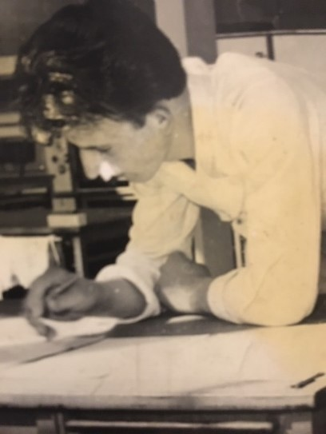
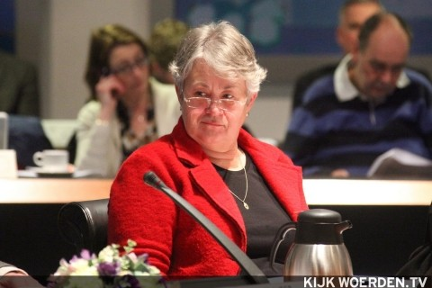

Als je een reden hebt om te bidden, bid je anders.’
“Ik ben in 1947 geboren in Driebruggen. Ik heb een tweelingzus, zij is de oudste, want een goede heer laat de dame voorgaan. Het was na de oorlog, dat was geen probleem, er was alleen weinig. In het jaar erop zijn we verhuist naar Waarder. Een huis met rietdak, daar zijn we blijven wonen. Ander halfjaar na mijn geboorte kreeg ik een broertje. Nu is dat geen punt, want mijn moeder zorgde voor broertje en Jannie, mijn zus. Maar op een gegeven moment stond deze Jan al een beetje alleen. Ik ben altijd op zoek geweest naar hoe kan ik mezelf vermaken. .
Toen ik zes was, ging ik naar school. Dan loop je een beetje achter in de contacten, in eigenlijk alles. Praktisch was ik best creatief, maar op het gebied van theoretisch dingen was het heel moeilijk. Dat is altijd zo gebleven. In die tijd hadden schoolmeesters geen belangstelling voor kinderen die achterliepen. Ze hebben mij altijd maar een beetje laten sukkelen. Wat ze toen zeiden was: ‘Nou, kijk eens naar je zus. Die kan het wel.’ Zij kon het wel, dat klopt. Ik was wat dyslectisch, mij lukte dat niet. Ik heb wel één schoolmeester gehad waar ik mee overweg kon. Die heeft mij netjes leren schrijven, al was het niet foutloos. Eigenlijk werd het niks, dat school. Uit school werkte ik bij een boer op ’t Laageind in Driebruggen. Daardoor dacht ik ‘Ik ga gewoon naar een boerenopleiding en dan wordt het misschien nog wat.’ In die tijd vroeg een oom van mij echter of ik bij hem wilde komen werken in de bakkerij. Dat heb ik gedaan. Er volgde een bakkersopleiding in Gouda. En ik ben bakker geworden. Deze tijd was een moeilijke situatie voor mij, dat kwam mede door de kerk.
‘Daar scoorden we niet mee’
Mijn ouders waren lid bij de Hervormde kerk in Waarder, omdat de rest van de familie daar ging. Ze vonden het er niet zwaar genoeg. We zijn er wel gedoopt, maar op een gegeven moment gingen mijn ouders thuis preken lezen. Zo nu en dan had je op Driebruggen ook een kerkdienstje. Daar scoorden we niet mee, we werden uitgescholden. Ze scholden ons uit voor zwartekousenkerk en vrome visjesvreter. Dat heeft me altijd heel erg geraakt. Zelfs op de Hervormde school werden we uitgescholden. De Gereformeerden deugden sowieso niet, daar had je ook niks mee. Maar dat het ook door je eigen Hervormde mensen gebeurde, was geen feest. Met het gevolg dat je op Driebruggen eigenlijk nergens bij hoorde. Ik ben op een gegeven moment wel weer naar de kerk gegaan en mijn zusje ook. We gingen naar de catechisatie en de jeugdvereniging. Dat gaf mij een hele rare ervaring. .
Mijn ouders wilden een bevindelijke prediking, dat houdt in dat ze vertellen wat God betekent heeft voor je ziel. Dat bleef wel bij mij hangen, ik kan wel naar de kerk gaan, maar hoe moet het nu verder? Het was voor mij best een heel onzekere tijd, psychisch ook. Eens gaf er iemand catechisatie, meneer de Pater uit Oudewater. Die man begreep wel wat er aan de hand was, die kende mijn moeder ook, die begreep dat wel. Je bidt voor het eten, maar dat is anders bidden dan dat je echt bidt. Als je met een zorg zit, dan bid je anders. Ik heb sterk ervaren dat God zei ‘Jan, wees er nou voor mij. IK ben er ook voor jou.’ Dat heeft mijn leven wel vastgehouden. .
Koos vriend(in)loos
Toen ik 16/17 was kwam de periode dat iedereen zich afvroeg: ‘Wat ga je doen?’ Er waren er al die vriendjes en vriendinnetjes hadden. Vriendinnetjes kreeg ik niet, vriendjes had ik niet. Inmiddels begon ik ook te kijken naar met wie ik mijn leven kon delen. Dat ging heel moeilijk of niet. Ik had weleens een meisje dat mij zag zitten en dan kwam ik thuis en zeiden mijn ouders: ‘Die moet je heel niet hebben! Die zijn vader heb dit en die zijn moeder heb dat.’ Op Driebruggen werd het niks.
Toen moest ik voor mijn amandelen naar het ziekenhuis, dat is een heel bijzondere belevenis geweest. Ineke werkte er ook, maar die zei altijd nog meneer Stouthart tegen mij. Toen ik naar huis mocht bracht Ineke mij naar de deur en toen zei ik: ‘Ik hoop je nog eens te zien.’ Ik heb ontzettend veel moeite gedaan om contact met haar te zoeken, maar het is me gelukt.
De drogisterij
Ik heb na het trouwen samen met Ineke belijdenis gedaan. Ik dacht als ik bij de kerk ben, dan komt het wel, dan versterkt je relatie met God wel. Dat is niet zo. Tenminste bij mij niet. De dag dat we belijdenis deden ging om vijf uur ’s ochtends de sirene. Toen stonden er hier, in Woerden vijf winkels in de brand. Dit huis stond ook in de brand en is gespaard gebleven. Deze mensen kende ik, omdat ik toen ik Ineke had leren kennen, ze zei: ‘Ik vind je een aardige jongen, maar ik heb niks met dat meel.’ Nieuw probleem. Ik had alleen LBO dus kon de verpleging niet in. Mijn moeder heeft vroeger in Oudewater bij een drogist in de huishouding gewerkt, zij zei: ‘Is drogist niks voor je?’ Dus ik, hier in Woerden, een gesprek met de drogist. Hij zei: ‘Het is hard leren, maar je kan dat wel worden.’ Meteen na mijn drogistenopleiding moest ik in dienst. Ik was nog in dienst toen ik weer bij de drogist hier in Woerden was. En hij zei: ‘Moet jij de winkel overnemen?’ Door verschillende leningen zijn we hier in 1972 de winkel begonnen.
‘Wijs me de weg’
In 1973 werd ik gevraagd in de kerkenraad. Ik ben God dankbaar dat ik de kerkenraad niet mijn geloof ben verloren. Het gaat alleen maar over zakelijke dingen. Als je een reden hebt om te bidden, bid je anders. Er was wel een reden om te bidden, maar niet dat ik dacht ‘ik heb Gods nabijheid nodig of Gods geest of het verzoenend leven van Jezus nodig; dat was niet iets wat voor mij zo helder was. Daarnaast heb ik Dabar gedaan, ook wel camping-evangelisatie. Heel mooi, maar het heeft me veel energie gekost. Twaalf jaar ben ik ouderling geweest, Ineke heeft zich naar gewerkt. Op een gegeven moment was het echt op. Ik denk dat ik toen wel een jaar ruim tot overspannen toe geweest ben. En dan leer je bidden. Dan krijg je een ander gebed. Toen ik een poosje uit de kerkenraad was wilde ik toch graag iets doen. Een pastoor van het bejaardentehuis zei toen: ‘Misschien wil je in de verzorgingstehuizen eens een dienstje gaan doen.’
26 jaar geleden ben ik in de bejaardentehuizen en de kapel een dienst gaan doen. Dat is voor mij een hele mooie tijd geweest: studeren, een preekje opschrijven, liederen kiezen. Ik heb ook begrafenissen gedaan, dat schud je niet zomaar even uit je mouw. En als je dan van mensen hoort dat het hun wat gedaan heeft, dan denk je: Zo neemt God je bij de hand om te laten doen wat Hij vindt wat er moet gebeuren daar. Wat moet je nou van je leven verwachten? Je moet van je leven helemaal niks verwachten. Als ik het achteraf zeg hè, het enige wat je moet doen, vanuit zorg of beleving. Zeg: Heere God, leidt me de weg, is het prima. Dan zal je zien dat er wegen voor je opengaan. Ik heb alleen maar gedacht dat ik zou mislukken. Als je het in Gods hand kan leggen en kan vragen ‘wijs me de weg’ dan denk ik dat dat een hele mooie overgave is. Mijn leven is gestuurd!
